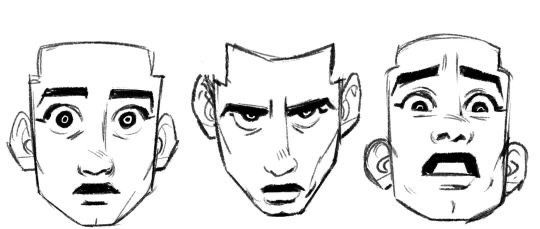
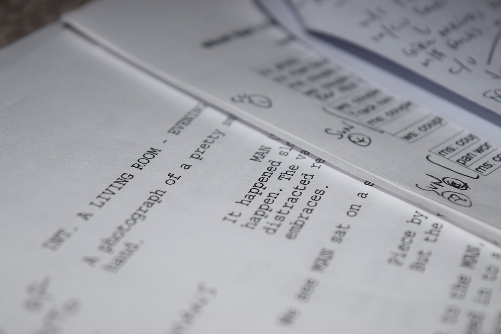
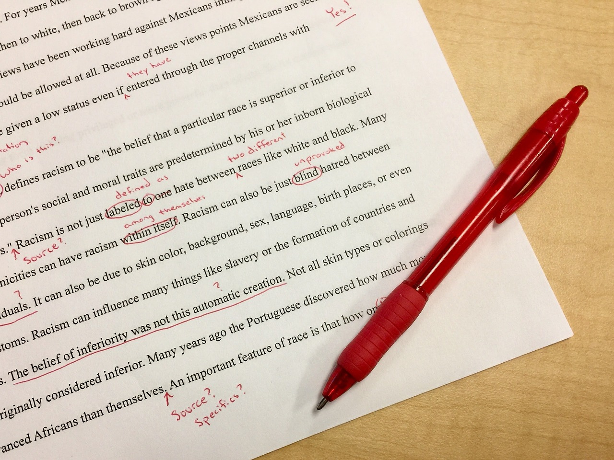
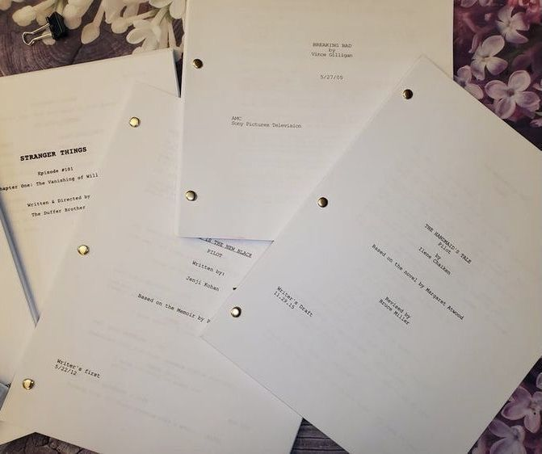

Software
- FadeIn
- Final Draft
- Celtix
FREE options are FadeIn and Celtix. I personally prefer FadeIn and have used it for years. It has everything you need and also reminds you often to SAVE. YOUR. WORK!
Screenwriting is the foundation of every short and feature film. It's the story, the meat and potatos. Your characters exist here before the actors bring them to life. Every theme, action, scenery, all of it starts here.
Creative writing has always been a passion of mine. Ever since I was little I've written novels, poetry, and short stories. I've also always loved film, everything about it. Combining the two was one of the most fun experiences I've ever had with writing. Learning the ins and outs of screenplay format, 'rules' and language was made easy by my college professor so I thought I would share the key takeaways and my personal process with you!
FREE options are FadeIn and Celtix. I personally prefer FadeIn and have used it for years. It has everything you need and also reminds you often to SAVE. YOUR. WORK!
Screenwriting software will make writing 1 million times easier and quicker. You can definitely hand-write your short film or even your feature if you prefer that method, however I find it a lot easier and less physically taxing on my hands to type it up. Now, why not use Google Docs or Word? Because there is NO built in formatting with set margins and styling.
Software like FadeIn will evenly space out certain elements, such as your Dialogue, Transitions, and Scene Headings, every single time. This way, you don't have to memorize the amount of spaces or TAB overs whenever you make a new section. It's just an easier, more efficient tool that I highly recommend.
As mentioned above under the SOFTWARE section, I personally use FadeIn for my screenwriting projects. It's free, which is HUGE for those of you in school or just don't want to pay an extra monthly fee. It has everything you need, no limits on the number of pages you can write, and is easy to print off or share with others.
It may take a while to come up with one that strikes you and pulls you in enough to make you want to write a whole script, but this is where you get to let your personal voice, style, and stories to thrive.
Remember, it's okay to keep it simple or small! Try not to think out the whole story all at once. Start with a person, or a place, or a memory/event that is personal to you. There are many different methods of brainstorming, it's important to find the one that works for YOU!
"WHATEVER WORKS" is the most important takeaway I got out of my screenwriting course. It means that while there are certain opinions, formats, and "rules" YOU are still the writer and it's YOUR movie. Do whatever works for you and the story. Art is subjective, that includes writing and every project you'll ever create.
This is by far the hardest step for me. I constantly get writers block or burnout, but I find that writing down any idea, no matter how small, and saving it for later helps pull me out of that blockage. I would also STRONGLY recommend saving every single idea you ever write down. You never know what you may look back on an expand!
Your characters ARE the story. They are what drives the themes and message, they are the reason people watch or listen. Deep diving into your main characters, and even your side characters, will immediately add a lot more depth to your story and allow you to write your story with a deeper understanding of it. You will go from having a rough, surface level idea for characters and the plot to making this story and these people REAL.
Ask your characters questions that you would ask someone you're meeting for the first time, because that's what's happening! You're getting to know your characters through a conversation, answering in their voice and with their experiences. They are not imaginary, treat them as real physical beings.
Asking these questions and answering them in the voice of your character will give them a body and a life. You start to understand them from the inside out, and no matter what situation they find themselves in you will be able to write them in respect to their character and how they would react.
This step in the process has been incredibly useful to me. I do NOT write a story without completeing this step. It allows you to write your characters with an amount of care, understanding, and personality that makes it feel like you're looking back on a memory of someone in your life. In a way, once your figure out your characters the story starts writing itself.
Now is the time for you to create an outline for how you envision your story playing out. This is an OPTIONAL step. As with everything in this list, the method and way you go about writing your story depends on what process works for you. This is my personal method.
Creating an outline will help keep your ideas in order, get your started on the writing process, and allow you to easily come back and fill out the story in a more detailed way. It also makes it easier to go back and make changes to your story before you go all in on elaborating plot points.
When I start making an outline, only writing the simplified version of plot events, I can spot errors or things that I want to change along the way. I'll get the feeling that something I originally had planned no longer fits with the character and who they've evolved into. I will also usually go into writing the first draft before I even finish the outline because it gets my creative juices flowing. Like I said, this process works in tandem with how YOU work.
You've made it to the first draft! Woo! Keep in mind, it doesn't have to be perfect the first write-through. Force yourself to not look back and change things as you write. Keep going until the end, then take a step back and save the revisions and changes for the second draft.
It's also a good idea to have other people who have not heard your idea/story read the first draft. That way you can get genuine feedback, see how it's receieved and if there is any confusion. It can be hard and uncomfortable to have other people read your work, especially when it's a first draft, but it is a vital step to improving your work and getting your point/message across in a way that will be clear and successful.
Keep in mind as well that you don't need to apply every little suggestion people give you. Take what resonates and leave the rest!
Personally, it's hard for me to not try to make the first draft perfect. One of my biggest faults with writing is overthinking and wanting the first draft to be the final draft. That just isn't realistic, so forcing yourself to just write and not pick it apart until you're done is a lesson I'm still trying to learn. I've gotten better at giving my work to people for them to read and give feedback. It's truly one of the most important parts of the writing process and is something I don't recommend skipping.

Take a break! It's important to remember to take care of yourself. Writing and doing character work, the entire creative process can be very tiring and mentally exhausting. Taking a break is vital in making sure you don't burn out, it refreshes your mind and also your eyes. It's easier to make changes and continue writing when you have a fresh mindset instead of a tired, overworked brain.
So go outside, hangout with friends, listen to music. Do whatever you do to relax. And when you're ready to look at it again and have another crack at it, you'll be awake, refreshed, and doing so won't burn you out.
I'll admit, it's a bit hard for me to take a break as well because I get so wrapped up in my work and I want to keep working on it or I just want to get it done. But it's even harder to do that when my brain is tired, overworked, and lacking motivation. However, I've gotten a lot better at it. I'll step away from my work and get something to eat, watch TV for a while, and just let my mind relax. If I've worked on something for the majority of the day, I'll take my break and not look at the project until the next day. I've found that scheduling out blocks of time for each project is helpful. It's like setting a guideline so then you have something to stick to. It's not just 'well, I'll work on it till 12pm' and then before you know it you're working on it well past then.
Now that you've taken a break, you're ready to begin rewriting! This is the part where you get to make all the changes you've thought about making and (hopefully) haven't made them until now! With rewrites, I recommend copying the original text over to another document, that way you still have the original to reference or look back on, and you're still able to make changes without permanently losing your original version. Or you could have the original open to the side of your new document as you're rewriting, depends on your preference!
Focus on small sections at a time, try not to get overwhelmed with rewriting the entire thing. And also keep in mind that you don't NEED to rewrite all of it. Using the feedback you've gotten from others and the parts you want to change, and keep that in mind as you write your second draft.
Rewrites can be a bit tricky, moreso when it comes to trying to nail the feeling that you're going for, or trying to get the message across. I have issues with words just not sounding right when I read them back and I keep trying different combinations of words to see how it changes the meaning. It's paying attention to little details like that, that make rewrites hard.
You're finishing your script! Making those final touches, final changes, bringing it all together. You might go through a couple of drafts before you get to this step, if so then repeat the last two steps until the story is where you want it! After you've finished you script, share it with those around you! If you want it to be brought to life, ask friends, teachers or anyone who might have the resources to do so. If you're currently in college, go to the film department and see who's interested, because film students are always looking for projects to build their reels.
Remember, this is YOUR project and ultimately YOUR decisions. You don't have to follow this step by step if it doesn't work for your creative process.
Remember, do whatever works for your story. You don't have to take everyone's suggestions and you don't need to obey the 'rules' of screenwriting such as keeping descriptions short, avoiding adjectives, and other formatting specifics.